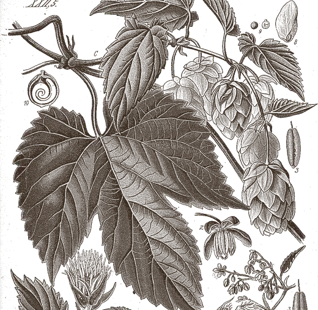
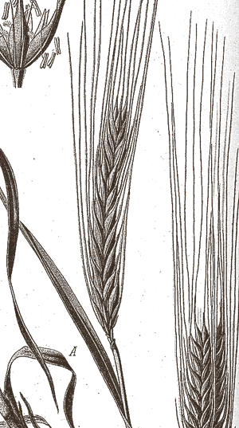
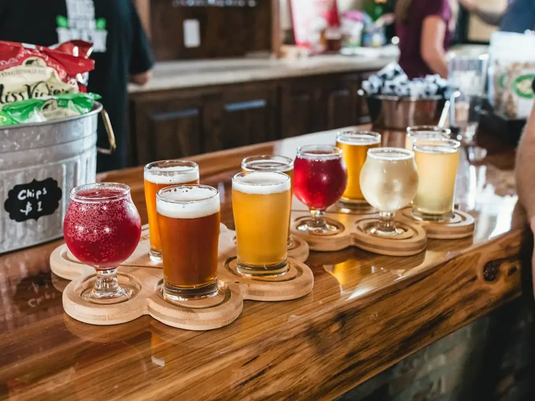
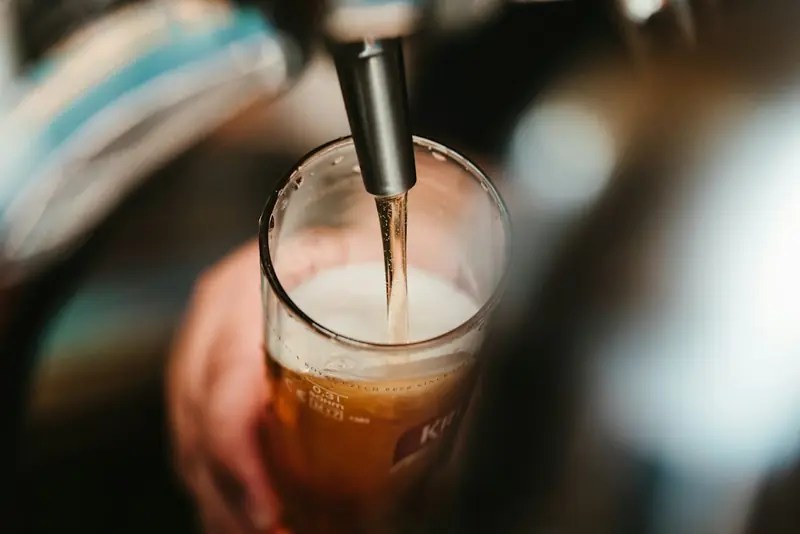
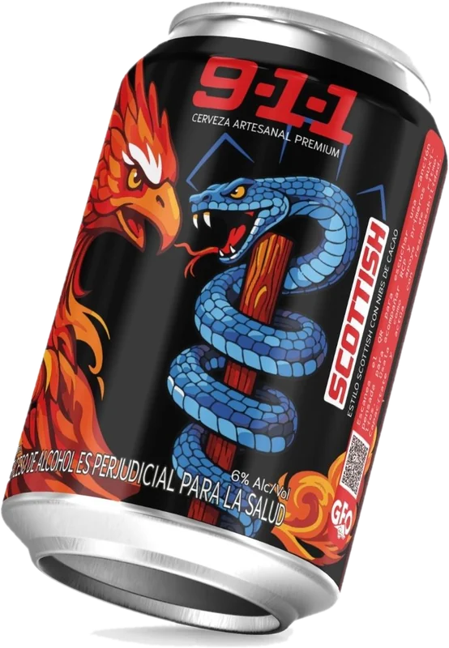

“Detrás del meme hay una historia con peso: un homenaje a bomberos, paramédicos y rescatistas.”
La historia de la 911Rubik DeathDistribuidor oficial de 911 by GFO Beer
Suena
la 911
La cerveza
que llega cuando
la necesitas
Sirena!
- Distribuye
- RD Distribuidor
- Estilos
- 02 Lager · Scottish
- Graduación
- 5–6 % ABV


5% ABVLager Cítrica
6% ABVScottish Ale
La cerveza del gremio en tu barra
Rubik Death es el distribuidor autorizado de 911 by GFO Beer, la cerveza artesanal que se ganó la escena metalera a punta de toques. Ellos la hacen; nosotros la ponemos en tu barra.
Nos encargamos de la logística, la relación con cada bar y la presencia en tarima. La 911 conserva su nombre, su fénix y su historia; nosotros garantizamos que esté fría donde suena distorsión.
- Lager Cítrica Tropical
- Scottish Ale
- Homenaje a los héroes
- Distribución en Bogotá

La línea02estilos de cerveza

Rubik Death
- Distribución autorizada
- Bares aliados en Bogotá
- Activaciones en tarima
- Presencia en eventos
renace
Lado A911 Lager
La línea
Dos estilos, un mismo origen. Cada lata lleva el Ave Fénix y el Báculo de Asclepio: renacer y curar, el espíritu de los que llegan primero.

911 Scottish
6% ABV · Lado B
- Estilo Scottish
- Nibs de cacao
- Caramelo y tostado
- Para sets largos
911 Lager
5% ABV · Lado A
- Indian Pale Lager
- Cítrica Tropical
- Notas de maracuyá y mango
- Ideal a 3–7 °C
Para tu bar
B2B · Bogotá
- Distribución mayorista
- Bares y restaurantes
- Eventos y tarimas
- Activaciones de marca
Temporada de terror
Noche de terror 911
Fecha y bar por anunciar · Bogotá
Activaciones en tarima, concursos y la 911 bien fría. Revolucionar se demuestra en la calle, no en un post.
Recibir la fecha¿Dónde hay una 911 fría cerca de ti?
Escríbenos tu barrio y te contamos en qué bares la encuentras.
Consultar puntos de venta